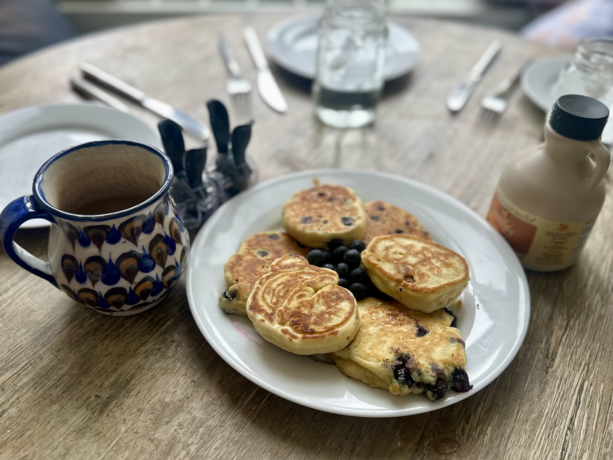

Back to home
Ellie's Anytime Fluffy Blueberry Pancakes

Description
Dive into the fluffy delight of these ultimate blueberry pancakes! Perfect for a guilt-free treat, these pancakes are lovingly made without any added sugar, ensuring you can indulge your sweet tooth naturally. Each bite is packed with juicy blueberries, offering a burst of flavor that perfectly complements the light, airy texture of the pancakes.
Ingredients
- 1 cup all-purpose flour
- 2 teaspoons baking powder
- 1/4 teaspoon baking soda
- 1/2 teaspoon salt
- 3/4 cup milk
- 1 large egg
- 2 tablespoons olive oil or veg
- 1/4 teaspoon vanilla extract
- Vegetable oil spray
- 1/2 cup blueberries
Steps
- In medium bowl, whisk together flour, baking powder, baking soda and salt. In small bowl, whisk milk, eggs, oil, and vanilla until well combined.
- Add milk mixture to flour mixture and stir gently with rubber spatula until just combined (batter should remain lumpy). Add blueberries to batter. Let batter sit for 10 minutes before cooking.
- Spray 12-inch nonstick skillet with vegetable spray and heat over medium heat until hot, about 1 minute.
- Use 1/4-cup dry measuring cup to scoop 1/4 cup batter into skillet. Repeat 2 more times, leaving space between mounds of batter (you want 3 pancakes to cook up separate from one another).
- Use spatula to flip pancakes and cook until golden brown, 1 to minutes. Transfer to plate. Repeat with remaining batter in 2 more batches. Turn off heat. Serve.